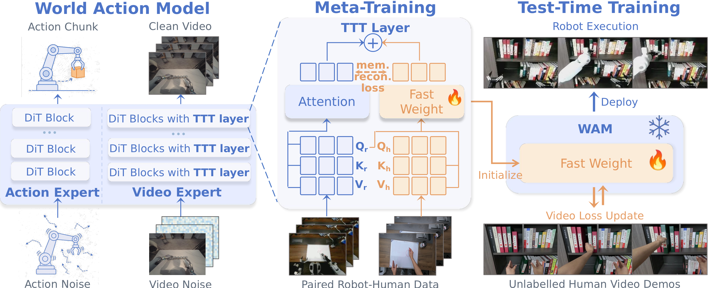
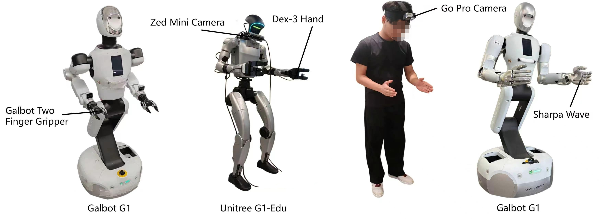

WAM-TTT builds on LDA, a pretrained world-action model. TTT residual branches are inserted into its video expert. During deployment, only the fast weights are updated. The video and action experts, slow projections, and pretrained action prior stay fixed, preventing the human-side update from overwriting the policy.
Meta-training uses 2,286 paired human and robot episodes over nine manipulation tasks. A key-value memory reconstruction objective trains the fast-weight memory from paired visual observations without pose or action labels on the human side.
We integrate the video-side TTT layers into a FastWAM-based implementation and compare short-window predictions conditioned on current robot observations with the corresponding ground-truth frames. Each window contains the current observation and eight predicted frames at 0.4 s intervals, spanning 3.2 s. Ground truth is shown on the left and prediction on the right, each with head-left, left-wrist, and right-wrist camera views.
Each task is shown with two separate videos: an unlabeled human demonstration used for test-time training and the corresponding robot execution after adaptation. The three representative cases below highlight cross-embodiment transfer, dexterous rearrangement, and long-horizon manipulation.
| Method | Table Bussing | Swap Place |
|---|---|---|
| WAM-TTT | 100.0 | 88.9 |
| WAM-LoRA | 30.0 | 0.0 |
| w/o Meta Training | 9.0 | 0.0 |
| w/o Memory Recon. | 66.7 | 72.0 |
| w/o TTT | 40.0 | 74.1 |
Progress (%) under the unseen-scene setting, with 10 trials per cell. Fast-weight TTT, meta-training, and structured memory reconstruction each contribute to deployment-time steering.
| Robot / Human | 3-task Avg. |
|---|---|
| 100 / 0 | 59.5 |
| 10 / 190 | 51.4 |
| 100 / 100 | 74.1 |
| 200 / 0 | 73.7 |
| 100 / 200 | 73.3 |
With the same 200-episode budget, 100 robot plus 100 human episodes reaches 74.1%, comparable to 200 robot episodes at 73.7%, while halving robot teleoperation demand.
| Method | Setting | Transfer Bottle | Table Bussing | Deliver Drink | Swap Place | Pour Water | Stamp Paper | Flip Steak | Pyramid Stacking | Multi-step Steak | Avg. |
|---|---|---|---|---|---|---|---|---|---|---|---|
| π0.5 | Orig. | 55.5 | 80.0 | 70.0 | 12.2 | 25.0 | 31.1 | 4.4 | 6.1 | 2.0 | 31.8 |
| New | 33.4 | 36.0 | 15.0 | 7.4 | 10.0 | 24.4 | 2.0 | 4.7 | 0.3 | 14.8 | |
| LDA | Orig. | 72.0 | 90.0 | 80.0 | 66.7 | 33.6 | 50.0 | 33.3 | 6.7 | 19.2 | 50.2 |
| New | 56.0 | 70.0 | 55.0 | 44.4 | 20.0 | 33.3 | 10.0 | 0.6 | 3.0 | 32.5 | |
| EgoScale | Orig. | 69.4 | 80.0 | 69.6 | 10.0 | 30.0 | 2.7 | 5.0 | 2.0 | 2.0 | 30.1 |
| New | 34.4 | 44.0 | 33.3 | 6.0 | 7.5 | 1.1 | 5.0 | 2.0 | 2.0 | 15.0 | |
| WAM-Cotrain | Orig. | 11.6 | 40.0 | 59.4 | 74.1 | 26.3 | 10.0 | 21.0 | 9.4 | 16.8 | 29.8 |
| New | 10.0 | 10.0 | 44.3 | 48.1 | 24.0 | 21.7 | 34.2 | 12.0 | 23.8 | 25.3 | |
| WAM-ICL | Orig. | 60.0 | 89.0 | 70.3 | 68.7 | 55.3 | 36.0 | 33.3 | 4.7 | 18.2 | 48.4 |
| New | 10.0 | 10.0 | 14.2 | 10.0 | 0.0 | 5.0 | 10.0 | 2.0 | 2.5 | 7.1 | |
| WAM-TTT | Orig. | 77.8 | 100.0 | 90.0 | 88.9 | 63.3 | 35.0 | 44.0 | 10.0 | 40.6 | 61.1 |
| New | 55.6 | 100.0 | 66.7 | 66.7 | 30.0 | 8.3 | 34.3 | 10.4 | 43.8 | 46.2 |
Full main results. Progress (%) on 9 tasks under the Orig. (standardized robot cubicle) and New (unseen household, combined OOD shift) settings. All cells are averaged over 25 trials.
Together with the three featured cases above, the six benchmark tasks below complete the nine-task evaluation. Five additional gripper tasks—Tidy Shelf, Cook Rice, Carry Box, Insert Straw, and Scan Code—extend the deployment coverage beyond the core benchmark. Human demonstrations and robot executions stay as independent videos so their timing, viewpoints, and full trajectories remain easy to inspect.

Evaluation spans three real-robot embodiments: a humanoid with a three-finger hand, a bimanual two-finger gripper platform, and a bimanual high-DoF dexterous platform. The nine-task benchmark covers handovers, tool use, pouring, table bussing, object rearrangement, stacking, and long-horizon cooking interactions. Additional gripper demonstrations extend coverage to shelf organization and rice preparation.
The primary benchmark contains nine manipulation tasks across three embodiments. Each task is evaluated in a standardized setting and a previously unseen household setting. The unseen setting jointly changes lighting, table height, object instances, and surrounding appearance. Progress is measured with task-specific partial credit over 25 trials per task and setting.
For tasks in which human and robot embodiments naturally admit different solutions, the human demonstration is collected to reproduce the robot's task-level interaction pattern. The Cook Rice example shows the RGB motion comparison and the corresponding DINOv3 feature maps, illustrating how both demonstrations follow the same task strategy.
If you find this work useful, please cite WAM-TTT.
@article{wamttt2026,
title = {{WAM-TTT}: Steering World-Action Models by Watching Human Play at Test Time},
author = {Feng, Yusen and Han, Bingchen and Lyu, Jiangran and Liu, Kai and Zheng, Yixin and Wan, Yuxuan and Liu, Weiheng and Han, Sun and Li, Ruiqin and Zhang, Yulong and Liu, Fangfu and Shi, Xuesong and Liu, Libin and Wang, Yizhou and Zhang, Zhizheng and Wang, He},
journal = {arXiv preprint arXiv:2607.06988},
year = {2026},
note = {Accepted at CoRL 2026}
}